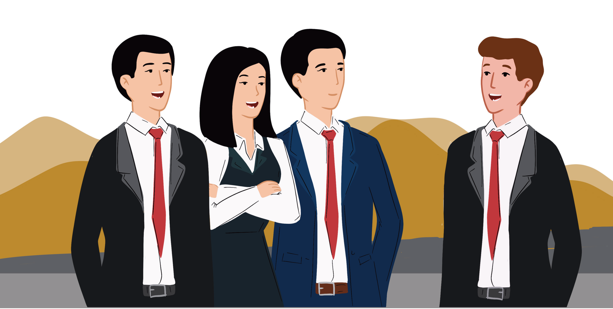

Resurset dhe trashëgimia e vendit tim
Shfrytëzimi i pasurive nëntokësore
Situata 1.
Pas mbërritjes së fundit të turistëve, udhërrëfyesi u drejtua për te grupi japonez dhe filloi bisedimin me ta. Ai nuk e dinte arsyen përse ky grup kishte ardhur prej së largu në Kosovë, prandaj menjëherë u interesua që ta shuante këtë kureshtje.
- Përshëndetje dhe mirë se erdhët në Kosovë! Jam i lumtur që keni ardhur në shtetin tonë.
- Konnichiwa (përshëndetje), faleminderit shumë për mikpritjen! Shpresoj të kalojmë mirë së bashku!
- Meqë jemi duke biseduar, mund t’ju pyes pse zgjodhët pikërisht Kosovën për ta vizituar?
- Ne jemi duke bërë disa hulumtime për pasuritë nëntokësore të vendeve të Evropës dhe, ndër to, zgjodhëm edhe Kosovën. Për pasuritë nëntokësore të vendit tuaj nuk kishte shumë informacione në internet, prandaj ato që do t’i mësojmë gjatë kohës sa jemi këtu do t’i shfaqim në uebfaqe.
- Para se t’i vizitojmë vendet që ju nevojiten për hulumtim, mund t’ju tregoj në pika të shkurtra për pasuritë tona nëntokësore. Kosova ka një nëntokë mjaft të pasur, duke filluar nga thëngjilli linjit - me sasi më të madhe, i cili shfrytëzohet për prodhimin e energjisë elektrike në Termocentralin “Kosova A” dhe “Kosova B”, minerale të plumbit, të zinkut, të argjendit, të arit e shumë të tjera. Miniera më aktive është “Trepça”, e cila ndodhet në Mitrovicë.
- Sipas atyre që thatë ju, Kosova qenka mjaft e pasur me minerale.
